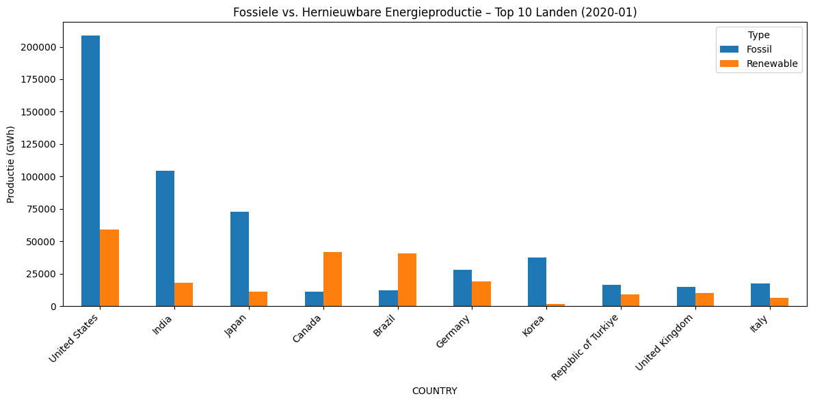

Powering Europe’s Future: An Analysis of the Sustainable Energy Transition#
Team 40
Hanna Daorah (15565823)
Leonardo Sabatini (15781542)
Jordan Cheuk-Alam (15086796)
Santino Petrovic (15675602)
Table of Contents#
Introduction#
For a long time, the world has mostly used fossil fuels for energy. But because of the urgent climate crisis, there’s a big global effort to switch to cleaner energy. Governments, businesses, and people now see we need to move to renewable energy sources like wind, solar, and hydropower. Some want this change to happen very fast, while others say we need to go slower because of money and practical challenges. This discussion about how quickly we change our energy is now a major global topic for leaders and for the environment.
This data story uses available information to explore Europe’s move towards sustainable energy. By looking at details like monthly electricity production, country-level energy facts, and economic situations, we want to show the tension between big climate goals and what is truly possible economically.
Through charts and analysis, we aim to understand the main challenges and compromises in today’s energy debate. We hope to find out if the world is on track to meet its energy goals, or if the gap between climate plans and real-world progress is still getting wider.
Perspective 1: Economic and Social Feasibility of the Energy Transition
This view looks at whether Europe can realistically afford and manage the shift to sustainable energy.
Costs and Investments: Studies show that fully decarbonizing Europe’s energy system will cost trillions of euros over decades (e.g., about €7.9 trillion for electricity and heating from 2020 to 2050). However, the cost of renewable technologies has fallen sharply, making these investments comparable to current energy prices. Experts believe this energy shift will actually ‘boost’ the European economy by creating jobs and growth. For instance, shifting remaining energy to renewables in countries like the Netherlands might cost 10-15% of annual GDP, but this is seen as manageable within Europe’s overall economic strength.
Financial Capacity of Countries: Most European countries are wealthy enough to handle these investments over time. Richer nations like Germany, France, and the Netherlands (each with trillions in GDP) can set aside large budgets for this change. Investing in renewables is also expected to create jobs (e.g., over 10,000 jobs for every gigawatt of wind power). This suggests that nearly all EU countries have enough money to switch to large-scale renewable energy, especially with support from the European Union, though smaller or weaker economies might need more help.
Possible Obstacles:
Lack of Money: Some countries might struggle to get affordable and stable funding for energy projects. Wealthier EU nations often get loans at lower interest rates, while weaker economies face higher costs.
Shortage of Raw Materials: Building renewable energy systems needs many important materials, like lithium, cobalt, and rare earth elements for batteries and wind turbines. Demand for these is growing very fast, and Europe mostly depends on imports, which can cause delays if supplies are tight.
Infrastructure Gaps: Even with enough raw materials, countries need to upgrade their physical power grids. Large amounts of wind and solar energy can only be used if the high-voltage networks are modern and well-connected across Europe. Countries with good renewable potential but old grids might need to fix their infrastructure first.
Perspective 2: Climate Urgency for Energy Transition
This view highlights the strong climate reasons why we need to move to sustainable energy quickly.
Rising Temperatures and Agriculture: Europe is getting warmer, and this is already reducing crop harvests. Climate reports (like those from the IPCC) show that heat and drought will cause big production losses in European farming. For example, maize harvests could shrink by up to 50% with about 3°C of warming, especially in Southern Europe. Even small temperature increases are affecting farming, particularly in regions already facing droughts.
Increase in Extreme Weather: Climate change is making extreme weather events worse. The IPCC predicts more floods in Europe as temperatures rise, and the risk of long droughts in Southern Europe is also increasing. Storms are also becoming stronger and more frequent. For example, Summer 2023 was the hottest ever recorded in Europe, with record storms and heavy rain. These extreme weather events threaten buildings, crops, and safety.
Changes in Ecosystems: As the planet warms, natural systems are being disrupted. The IPCC states that with every extra degree of warming, plants and animals lose living spaces. Beyond about 2°C of warming, these changes become permanent, affecting forests and other natural areas. This leads to a loss of biodiversity and weakens natural defenses against climate risks like floods and heatwaves.
Scientific Reports and Deadlines: Climate studies warn that time is running out. For instance, the IPCC says global CO2 emissions need to be 40-60% lower than 2010 levels by 2030 to limit warming to 1.5°C, aiming for net-zero emissions around 2050. Delaying action makes the necessary future cuts much harder and increases the risk of irreversible climate effects, such as ongoing sea level rise or widespread species extinction.
Dataset and Preprocessing#
This section outlines the datasets used in our analysis, their origin, structure, and the preprocessing steps necessary to ensure consistency, relevance, and analytical clarity. By combining high-frequency electricity production data with annual sustainability indicators, we enable both temporal and cross-sectional analyses of the global energy transition.
Datasets#
Dataset 1: Monthly Electricity Production by Source#
Original File:
data.csvPeriod Covered: 2010–2022
Size: 181,915 rows, 12 columns
Key Fields (Relevant to Economic Feasibility & Sustainability Progress):
COUNTRY: Name of the reporting countryPRODUCT: Type of energy source (e.g., Solar, Wind, Hydro, Fossil fuels), crucial for distinguishing sustainable from non-sustainable generation.VALUE: Monthly electricity production in GWh, provides the absolute volume for total and source-specific output.share: Monthly fraction of each source in total production, directly indicates the proportion of sustainable energy.YEAR,MONTH: Timestamp fields, enabling temporal analysis of production trends.
This dataset enables granular, source-specific monthly energy trend analysis by country, vital for assessing current energy mixes and the progress of the energy transition towards sustainability. It is fundamental for understanding the scope of energy production that needs to be decarbonized.
Dataset 2: Global CO2 and Greenhouse Gas Emissions#
Original File:
owid-co2-data.csvPeriod Covered: 1750–2023
Size: 50,191 rows, 79 columns
Key Variables (Relevant to Economic Feasibility & Climate Necessity):
country: Name of the reporting country, for geographical context.year: Year of observation, for historical trend analysis.gdp: Gross Domestic Product, a key indicator for a country’s economic capacity and ability to finance decarbonization efforts.population: Total population, for per capita emission calculations and understanding societal scale.co2: Total CO2 emissions (million tonnes), a direct measure of climate impact.co2_per_capita: Per capita CO2 emissions, useful for comparing individual environmental footprints and setting policy targets.coal_co2,oil_co2,gas_co2: CO2 emissions from major fossil fuels, highlighting reliance on carbon-intensive energy sources.land_use_change_co2: CO2 emissions related to land-use changes, another significant contributor to global emissions.temperature_change_from_co2: Contribution of CO2 to global temperature change, directly addressing the global warming aspect.temperature_change_from_ghg: Contribution of all greenhouse gases to global temperature change, offering a broader climate impact view.total_ghg: Total greenhouse gas emissions, for comprehensive climate impact assessment.
This dataset provides extensive global data on CO2 and greenhouse gas emissions, alongside socioeconomic indicators and temperature change metrics. It is crucial for quantifying the climate necessity for sustainability and understanding the economic context of emission reduction efforts.
Dataset 3: European Wholesale Electricity Price Data#
Original File:
european_wholesale_electricity_price_data_monthly.csvPeriod Covered: 2015-01 to 2025-06
Size: 3,690 rows, 4 columns
Key Variables (Relevant to Economic Feasibility):
Country: Name of the European country, for specific market analysis.Date: Month of the observation, for tracking price evolution over time.Price (EUR/MWhe): Monthly average wholesale electricity price in Euro per Megawatt-hour, a direct indicator of the economic cost of electricity within Europe.
This dataset is essential for analyzing the economic feasibility of energy transition by tracking the fluctuating costs of electricity across European markets, providing insight into the financial burdens and potential market impacts of moving towards sustainable energy.
Preprocessing#
Phase 1: Structural Harmonization#
Renamed inconsistent columns (e.g.,
Entity→COUNTRY,Value→VALUE).Created a unified datetime column (
DATE) by mergingYEARandMONTH.Filtered out aggregate entries (e.g., “World”, “OECD”) and irrelevant metadata fields.
Selected a consistent subset of
PRODUCTcategories relevant to the energy transition (e.g., Solar, Wind, Hydro, Fossil fuels).
Phase 2: Standardization and Feature Engineering#
Normalized country and category naming conventions across datasets.
Retained the
sharefield from the production dataset for proportional analysis.Engineered new variable
YoY_Growth_Renewable: year-over-year percentage point change in renewable energy share.Trimmed both datasets to remove unused columns and reduce dimensionality.
Note: Cleaned versions were kept in memory. For larger pipelines, exporting to compressed .parquet format with gzip is recommended to preserve structure and minimize I/O load.
Aggregations for Visualization#
Monthly Energy Production Trends
Aggregated
VALUEbyPRODUCTandDATEto compare time-series trends of different sources.
Country-Level Fossil vs Renewable Comparison
Summed annual production per country by source type; ranked top 10 countries.
Renewable Share and Access to Electricity Over Time
Computed annual averages across selected countries (e.g., G20).
Renewable Share vs GDP per Capita
Merged economic and energy indicators for scatterplots and animated bubble charts.
Annual Renewable Growth (YoY)
Calculated and mapped year-over-year changes in renewable share via choropleth.
Country-Focused Renewable Trends
Displayed annual renewable share for selected countries using small multiples.
These steps enable high-resolution tracking of production growth, comparative socio-economic context, and progress disparities across countries and energy sources.
Core Variables#
Continuous Variables#
VALUE(GWh): Monthly electricity production by source.share(0–1): Monthly fraction of each source in total electricity production.gdp: Gross Domestic Product, representing economic output.population: Total population.co2(million tonnes): Total CO2 emissions.co2_per_capita: CO2 emissions per person.coal_co2,oil_co2,gas_co2: CO2 emissions specifically from coal, oil, and gas.land_use_change_co2: CO2 emissions resulting from changes in land use.temperature_change_from_co2(°C): The amount of global temperature change attributed to CO2 emissions.temperature_change_from_ghg(°C): The amount of global temperature change attributed to all greenhouse gas emissions.total_ghg: Total greenhouse gas emissions.Price (EUR/MWhe): Monthly average wholesale electricity price in Euro per Megawatt-hour.
Categorical Variables#
Country: Name of the reporting country (e.g., Australia, Germany, Netherlands).PRODUCT: Type of energy source (e.g., Solar, Wind, Hydro, Fossil fuels).
Temporal Variables#
YEAR: Year of the observation.MONTH: Month of the observation (for monthly data).Date: Specific date timestamp for monthly data (e.g., electricity prices).
Perspective 1: Economic and Social Feasibility of the Energy Transition#
This perspective explores whether Europe can realistically afford and manage the shift to sustainable energy, considering costs, economic capacity, and practical challenges.
Argument 1.1: Renewable Energy Production is Growing, but Obstacles Remain
Content: This argument highlights the growth of renewable energy sources while acknowledging the financial, raw material, and infrastructure challenges countries face in fully decarbonizing their energy systems. Investments, though significant, are often comparable to current energy costs, and the transition can boost economic growth and job creation. However, variations in financial access, scarcity of critical raw materials (like lithium and rare earths), and the need for upgraded power grids can slow down progress.
Visualizations:
Multi-line chart: Monthly electricity production (
VALUE) by differentPRODUCTtypes (renewables vs. fossil fuels) fromdata.csv, showing historical trends and the increase in renewable output.Stacked area chart: Illustrating the changing
shareof renewablePRODUCTtypes in total monthly electricity production over time fromdata.csv, to visualize the shift in the energy mix.Choropleth map: European countries showing their
gdpfromowid-co2-data.csvorPrice (EUR/MWhe)fromeuropean_wholesale_electricity_price_data_monthly.csvto highlight economic capacity and energy cost variations across the continent.Scatter plot:
gdpfromowid-co2-data.csvversus a relevant renewable indicator (e.g., renewablesharefromdata.csvor change inco2emissions) to visualize the relationship between economic strength and sustainability progress.
Perspective 2: Climate Urgency for Energy Transition#
This perspective focuses on the compelling climate reasons that necessitate a rapid and comprehensive shift to sustainable energy sources.
Argument 2.1: Increasing Global Temperatures and Emissions Demand Urgent Action
Content: This argument emphasizes the observable trends in global warming, driven by rising greenhouse gas emissions, and their direct impacts. It highlights how increasing temperatures are affecting agriculture (e.g., reduced crop yields like maize), increasing the frequency and intensity of extreme weather events (such as floods, droughts, and severe storms), and disrupting ecosystems leading to biodiversity loss and weakened natural buffers.
Visualizations:
Multi-line chart: Global trends of
temperature_change_from_co2andtemperature_change_from_ghgfromowid-co2-data.csvover time, to clearly show the rising temperatures.Line chart: Global
co2andtotal_ghgemissions over time fromowid-co2-data.csv, to illustrate the primary drivers of global warming and the gap to necessary reduction targets.
Argument 2.2: Insufficient Decarbonization Progress Threatens Climate Goals
Content: Despite the clear climate urgency, many countries are not transitioning fast enough, leading to continued reliance on fossil fuels and high emissions. Scientific reports and deadlines, such as the IPCC’s call for significant CO2 reductions by 2030 to limit warming to 1.5°C, underscore that delayed action makes future mitigation exponentially harder and increases the risk of irreversible climate impacts.
Visualizations:
Choropleth map:
co2_per_capitaortotal_ghgacross countries fromowid-co2-data.csvfor a recent year, to visually represent emission disparities and highlight regions with high emissions.Bar chart: Comparison of fossil fuel-related emissions (
coal_co2,oil_co2,gas_co2) versus overallco2ortotal_ghgemissions for key countries or regions, showing continued dependence on carbon-intensive sources.Choropleth animation (or time series choropleth): Annual change in
co2ortotal_ghgby country fromowid-co2-data.csv, illustrating where emissions are increasing or decreasing and highlighting areas of stagnation or regression.
Visualizations Overview (not definitive)#
Visualization Type |
Variable(s) Used |
Argument Link |
|---|---|---|
Multi-line Time Series |
|
Arg. 1.1 |
Stacked Area Chart |
|
Arg. 1.1 |
Choropleth (latest share) |
|
Arg. 1.2, 2.1 |
Faceted Line Charts |
|
Arg. 1.2 |
Bubble Chart |
|
Arg. 2.2 |
Pair Plot Matrix |
Multiple socio-economic and energy indicators |
Arg. 2.2 |
Animated Choropleth (Growth) |
|
Arg. 2.3 |
Bar Chart (Top Countries) |
|
Arg. 2.1 |
Dataset Loading#
This cell loads the two primary datasets used throughout the analysis:
data.csv: Monthly electricity production by energy source and country (2010–2022)global-data-on-sustainable-energy.csv: Annual sustainability indicators per country (2000–2020)
These datasets form the foundation for all subsequent preprocessing, visualizations, and argumentation.
import plotly.io as pio
pio.renderers.default = "notebook_connected"
import pandas as pd
import plotly.express as px
import seaborn as sns
import matplotlib.pyplot as plt
# Laad de originele datasets
monthly_df = pd.read_csv("data.csv")
global_df = pd.read_csv("global-data-on-sustainable-energy.csv")
---------------------------------------------------------------------------
FileNotFoundError Traceback (most recent call last)
Cell In[1], line 11
8 import matplotlib.pyplot as plt
10 # Laad de originele datasets
---> 11 monthly_df = pd.read_csv("data.csv")
12 global_df = pd.read_csv("global-data-on-sustainable-energy.csv")
File ~/Documents/University/KI1/Subjects/InfoVisualisatie/miniconda3/envs/jupyterbook/lib/python3.10/site-packages/pandas/io/parsers/readers.py:1026, in read_csv(filepath_or_buffer, sep, delimiter, header, names, index_col, usecols, dtype, engine, converters, true_values, false_values, skipinitialspace, skiprows, skipfooter, nrows, na_values, keep_default_na, na_filter, verbose, skip_blank_lines, parse_dates, infer_datetime_format, keep_date_col, date_parser, date_format, dayfirst, cache_dates, iterator, chunksize, compression, thousands, decimal, lineterminator, quotechar, quoting, doublequote, escapechar, comment, encoding, encoding_errors, dialect, on_bad_lines, delim_whitespace, low_memory, memory_map, float_precision, storage_options, dtype_backend)
1013 kwds_defaults = _refine_defaults_read(
1014 dialect,
1015 delimiter,
(...)
1022 dtype_backend=dtype_backend,
1023 )
1024 kwds.update(kwds_defaults)
-> 1026 return _read(filepath_or_buffer, kwds)
File ~/Documents/University/KI1/Subjects/InfoVisualisatie/miniconda3/envs/jupyterbook/lib/python3.10/site-packages/pandas/io/parsers/readers.py:620, in _read(filepath_or_buffer, kwds)
617 _validate_names(kwds.get("names", None))
619 # Create the parser.
--> 620 parser = TextFileReader(filepath_or_buffer, **kwds)
622 if chunksize or iterator:
623 return parser
File ~/Documents/University/KI1/Subjects/InfoVisualisatie/miniconda3/envs/jupyterbook/lib/python3.10/site-packages/pandas/io/parsers/readers.py:1620, in TextFileReader.__init__(self, f, engine, **kwds)
1617 self.options["has_index_names"] = kwds["has_index_names"]
1619 self.handles: IOHandles | None = None
-> 1620 self._engine = self._make_engine(f, self.engine)
File ~/Documents/University/KI1/Subjects/InfoVisualisatie/miniconda3/envs/jupyterbook/lib/python3.10/site-packages/pandas/io/parsers/readers.py:1880, in TextFileReader._make_engine(self, f, engine)
1878 if "b" not in mode:
1879 mode += "b"
-> 1880 self.handles = get_handle(
1881 f,
1882 mode,
1883 encoding=self.options.get("encoding", None),
1884 compression=self.options.get("compression", None),
1885 memory_map=self.options.get("memory_map", False),
1886 is_text=is_text,
1887 errors=self.options.get("encoding_errors", "strict"),
1888 storage_options=self.options.get("storage_options", None),
1889 )
1890 assert self.handles is not None
1891 f = self.handles.handle
File ~/Documents/University/KI1/Subjects/InfoVisualisatie/miniconda3/envs/jupyterbook/lib/python3.10/site-packages/pandas/io/common.py:873, in get_handle(path_or_buf, mode, encoding, compression, memory_map, is_text, errors, storage_options)
868 elif isinstance(handle, str):
869 # Check whether the filename is to be opened in binary mode.
870 # Binary mode does not support 'encoding' and 'newline'.
871 if ioargs.encoding and "b" not in ioargs.mode:
872 # Encoding
--> 873 handle = open(
874 handle,
875 ioargs.mode,
876 encoding=ioargs.encoding,
877 errors=errors,
878 newline="",
879 )
880 else:
881 # Binary mode
882 handle = open(handle, ioargs.mode)
FileNotFoundError: [Errno 2] No such file or directory: 'data.csv'
Monthly Energy Production by Source (GWh)#
This line chart displays the monthly electricity production of three major energy sources: Solar, Wind, and Total Combustible Fuels from 2010 to 2022. The graph highlights the dynamic interplay between renewable and fossil-based generation, showing a clear upward trend for wind and solar, while fossil fuels exhibit more fluctuation.
X-axis: Time (monthly, 2010–2022)
Y-axis: Electricity production in gigawatt-hours (GWh)
Lines: Energy sources
Purpose: Supports Argument 1.1 by visualizing the growth of renewables over time
Show code cell source
import matplotlib.pyplot as plt
main_sources = ['Solar', 'Wind', 'Total combustible fuels']
df = monthly_df[monthly_df['PRODUCT'].isin(main_sources)].copy()
df['DATE'] = pd.to_datetime(df['YEAR'].astype(str) + '-' + df['MONTH'].astype(str))
pivot = df.pivot_table(index='DATE', columns='PRODUCT', values='VALUE', aggfunc='sum').dropna()
plt.figure(figsize=(12, 6))
for col in pivot.columns:
plt.plot(pivot.index, pivot[col], label=col)
plt.title("Maandelijkse Energieproductie per Bron (GWh)")
plt.xlabel("Jaar")
plt.ylabel("Productie (GWh)")
plt.legend()
plt.tight_layout()
plt.show()
---------------------------------------------------------------------------
NameError Traceback (most recent call last)
Cell In[2], line 4
1 import matplotlib.pyplot as plt
3 main_sources = ['Solar', 'Wind', 'Total combustible fuels']
----> 4 df = monthly_df[monthly_df['PRODUCT'].isin(main_sources)].copy()
5 df['DATE'] = pd.to_datetime(df['YEAR'].astype(str) + '-' + df['MONTH'].astype(str))
6 pivot = df.pivot_table(index='DATE', columns='PRODUCT', values='VALUE', aggfunc='sum').dropna()
NameError: name 'monthly_df' is not defined
Interactive Scatter Matrix (2019)#
This scatter plot matrix visualizes relationships between four key development and sustainability indicators for the year 2019:
Log GDP per Capita: Economic wealth (log-transformed for scale normalization)
Renewable Share (%): Proportion of renewables in total final energy consumption
Electricity Access (%): Population percentage with access to electricity
Clean Cooking (%): Population percentage with access to clean cooking fuels
Color encoding: Based on clean cooking access (%), using the Viridis scale
Interactivity: Allows selection, hover, and inspection of country-level data
Diagonal elements: Suppressed for clarity (no histograms/KDE)
Purpose: Enables multivariate comparison across nations to explore correlations between economic development and energy access, supporting Argument 2.1
Show code cell source
import pandas as pd
import numpy as np
import plotly.graph_objects as go
# 1. Data inladen en filteren op 2019
df = global_df.copy()
year = 2019
df = df[df['Year'] == year].dropna(subset=[
'gdp_per_capita',
'Renewable energy share in the total final energy consumption (%)',
'Access to electricity (% of population)',
'Access to clean fuels for cooking',
'Entity'
])
# 2. Kolommen hernoemen voor kortere labels
df = df.rename(columns={
'gdp_per_capita': 'GDP per Capita',
'Renewable energy share in the total final energy consumption (%)': 'Renewable Share (%)',
'Access to electricity (% of population)': 'Electricity Access (%)',
'Access to clean fuels for cooking': 'Clean Cooking (%)',
'Entity': 'Country'
})
# 3. Log-transform van GDP om spreiding te verbeteren
df['Log GDP per Capita'] = np.log10(df['GDP per Capita'])
# 4. Bouw de Splom (scatter plot matrix)
fig = go.Figure(data=go.Splom(
dimensions=[
dict(label='Log GDP per Capita', values=df['Log GDP per Capita']),
dict(label='Renewable Share (%)', values=df['Renewable Share (%)']),
dict(label='Electricity Access (%)',values=df['Electricity Access (%)']),
dict(label='Clean Cooking (%)', values=df['Clean Cooking (%)']),
],
marker=dict(
color=df['Clean Cooking (%)'], # kleur op basis van clean cooking
colorscale='Viridis',
showscale=True,
size=6,
line=dict(width=0.5, color='DarkSlateGrey'),
colorbar=dict(title='Clean Cooking (%)', ticks='outside')
),
diagonal=dict(visible=False) # geen histogrammen/KDE op diagonaal
))
# 5. Layout styling
fig.update_layout(
title=f"Interactive Scatter Matrix – {year}",
template='simple_white',
width=1000, height=800,
dragmode='select',
hovermode='closest',
margin=dict(l=60, r=60, t=80, b=60),
title_x=0.5
)
fig.show()
Fossil vs. Renewable Energy Production – Top 10 Countries (2020-01)#
This bar chart compares energy production from fossil and renewable sources for the top 10 countries with the highest total energy output in January 2020.
Fossil: Total combustible fuels
Renewable: Wind, Solar, Hydro
Type classification: Each energy source is labeled as either ‘Fossil’ or ‘Renewable’
Selection: Only countries with the highest combined production (GWh) in that month
Visualization: Unstacked bar chart showing the contrast between energy types per country
Purpose: Supports Argument 2.2 by illustrating which countries rely more on fossil or renewable sources
Show code cell source
# Kies één maand/jaar
year = 2020
month = 1
df = monthly_df[(monthly_df['YEAR'] == year) & (monthly_df['MONTH'] == month)].copy()
# Alleen relevante bronnen
df = df[df['PRODUCT'].isin(['Total combustible fuels', 'Solar', 'Wind', 'Hydro'])]
# Categoriseer als 'Fossil' of 'Renewable'
def label_type(product):
return 'Fossil' if product == 'Total combustible fuels' else 'Renewable'
df['Type'] = df['PRODUCT'].apply(label_type)
# Groepeer productie per land per type
agg = df.groupby(['COUNTRY', 'Type'])['VALUE'].sum().unstack().fillna(0)
# Top 10 landen met hoogste totale productie
top_countries = agg.sum(axis=1).sort_values(ascending=False).head(10)
top_agg = agg.loc[top_countries.index]
# Plot
top_agg.plot(kind='bar', figsize=(12, 6), stacked=False)
plt.title(f"Fossiele vs. Hernieuwbare Energieproductie - Top 10 Landen ({year}-{month:02})")
plt.ylabel("Productie (GWh)")
plt.xticks(rotation=45, ha='right')
plt.tight_layout()
plt.show()
---------------------------------------------------------------------------
NameError Traceback (most recent call last)
Cell In[3], line 5
2 year = 2020
3 month = 1
----> 5 df = monthly_df[(monthly_df['YEAR'] == year) & (monthly_df['MONTH'] == month)].copy()
7 # Alleen relevante bronnen
8 df = df[df['PRODUCT'].isin(['Total combustible fuels', 'Solar', 'Wind', 'Hydro'])]
NameError: name 'monthly_df' is not defined
Fossil vs. Renewable Energy Production – Top 10 Countries (2020-01, Countries Only)#
This bar chart compares energy production from fossil and renewable sources for the top 10 individual countries with the highest energy output in January 2020.
Fossil: Total combustible fuels
Renewable: Wind, Solar, Hydro
Entity filtering: All non-country entities (continents, unions, IEA scenarios) were excluded
Classification: Energy sources labeled as ‘Fossil’ or ‘Renewable’
Selection basis: Countries ranked by total energy production (GWh)
Visualization: Unstacked bar chart showing per-country energy source composition
Purpose: Refines Argument 2.2 by showing a clearer, country-specific distribution of fossil vs. renewable production
Show code cell source
import pandas as pd
import matplotlib.pyplot as plt
# Dataset inladen
monthly_df = pd.read_csv("data.csv")
# ❌ Lijst met niet-landen uitsluiten
exclude_entities = [
'World', 'Africa', 'Asia', 'Europe', 'North America', 'South America',
'European Union (27)', 'European Union (28)', 'OECD', 'Non-OECD',
'Non-OECD Asia', 'Non-OECD Europe and Eurasia', 'Middle East', 'Eurasia',
'Other Asia Pacific', 'Central & South America', 'IEA Net Zero by 2050 scenario',
'IEA Total', 'IEA Europe', 'IEA Americas', 'IEA Asia Oceania',
'OECD Total', 'OECD Americas', 'OECD Europe', 'OECD Asia Oceania'
]
# 📅 Filter op jaar + maand
year = 2020
month = 1
df = monthly_df[(monthly_df['YEAR'] == year) & (monthly_df['MONTH'] == month)].copy()
# 🔌 Alleen gewenste producten
df = df[df['PRODUCT'].isin(['Total combustible fuels', 'Solar', 'Wind', 'Hydro'])]
# 🧹 Verwijder niet-landen
df = df[~df['COUNTRY'].isin(exclude_entities)]
# 🌱 Label 'Fossil' of 'Renewable'
df['Type'] = df['PRODUCT'].apply(lambda x: 'Fossil' if x == 'Total combustible fuels' else 'Renewable')
# 📊 Groepeer per land/type
agg = df.groupby(['COUNTRY', 'Type'])['VALUE'].sum().unstack().fillna(0)
# 🔝 Top 10 landen met hoogste totale productie
top_countries = agg.sum(axis=1).sort_values(ascending=False).head(10)
top_agg = agg.loc[top_countries.index]
# 📈 Plot de bar chart
top_agg.plot(kind='bar', figsize=(12, 6), stacked=False)
plt.title(f"Fossiele vs. Hernieuwbare Energieproductie – Top 10 Landen ({year}-{month:02})")
plt.ylabel("Productie (GWh)")
plt.xticks(rotation=45, ha='right')
plt.tight_layout()
plt.show()

Dominant Energy Source per Country Over Time (Choropleth Animation)#
Visualization Type: Animated choropleth map
Timeframe: Annual (based on YEAR column from data.csv)
Data Filter: Only the following energy types are considered:
Coal, Oil, Natural Gas, Hydro, Wind, Solar, Nuclear, Biomass
Computation Logic:
Aggregate total energy production (
VALUE) perCOUNTRY,YEAR,PRODUCTIdentify the highest
VALUEper country-year → label asDominant_Source
Color Encoding:
Coal →
#4C4C4COil →
#A569BDNatural Gas →
#3498DBHydro →
#1ABC9CWind →
#2ECC71Solar →
#F1C40FNuclear →
#E67E22Biomass →
#95A5A6
Design Features:
Choropleth map with yearly animation
Fixed color mapping for consistency across frames
Legend labeled “Energy Source”
Slider reflects ascending temporal order
Purpose: Visualize transitions in national energy dominance over time, enabling detection of structural shifts (e.g., from fossil fuels to renewables) and geographic energy strategy contrasts.
Show code cell source
import pandas as pd
import plotly.express as px
# 1) Data inladen
monthly = pd.read_csv("data.csv")
# 2) Definieer welke producten je wilt samenvatten
sources = ['Coal', 'Oil', 'Natural Gas', 'Hydro', 'Wind', 'Solar', 'Nuclear', 'Biomass']
monthly = monthly[monthly['PRODUCT'].isin(sources)]
# 3) Totalen per land/jaar en vind de grootste bron
agg = (
monthly
.groupby(['COUNTRY', 'YEAR', 'PRODUCT'])['VALUE']
.sum()
.reset_index()
)
dominant = (
agg.sort_values(['COUNTRY', 'YEAR', 'VALUE'], ascending=[True, True, False])
.groupby(['COUNTRY', 'YEAR'])
.first()
.reset_index()
.rename(columns={'PRODUCT': 'Dominant_Source'})
)
# 4) Bepaal oplopende lijst met jaartallen
years_sorted = sorted(dominant['YEAR'].unique())
# 5) Choropleth met jaaranimatie (klein→groot)
color_map = {
'Coal': '#4C4C4C',
'Oil': '#A569BD',
'Natural Gas': '#3498DB',
'Hydro': '#1ABC9C',
'Wind': '#2ECC71',
'Solar': '#F1C40F',
'Nuclear': '#E67E22',
'Biomass': '#95A5A6',
}
fig = px.choropleth(
dominant,
locations="COUNTRY",
locationmode="country names",
color="Dominant_Source",
animation_frame="YEAR",
category_orders={"YEAR": years_sorted}, # forceert oplopende volgorde
color_discrete_map=color_map,
title="Dominant Energy Source per Country Over Time",
labels={"Dominant_Source": "Dominant Source"},
width=1000,
height=600
)
fig.update_layout(
legend_title_text='Energy Source',
margin=dict(t=100, b=50, l=50, r=50)
)
fig.show()
---------------------------------------------------------------------------
FileNotFoundError Traceback (most recent call last)
Cell In[6], line 5
2 import plotly.express as px
4 # 1) Data inladen
----> 5 monthly = pd.read_csv("data.csv")
7 # 2) Definieer welke producten je wilt samenvatten
8 sources = ['Coal', 'Oil', 'Natural Gas', 'Hydro', 'Wind', 'Solar', 'Nuclear', 'Biomass']
File ~/Documents/University/KI1/Subjects/InfoVisualisatie/miniconda3/envs/jupyterbook/lib/python3.10/site-packages/pandas/io/parsers/readers.py:1026, in read_csv(filepath_or_buffer, sep, delimiter, header, names, index_col, usecols, dtype, engine, converters, true_values, false_values, skipinitialspace, skiprows, skipfooter, nrows, na_values, keep_default_na, na_filter, verbose, skip_blank_lines, parse_dates, infer_datetime_format, keep_date_col, date_parser, date_format, dayfirst, cache_dates, iterator, chunksize, compression, thousands, decimal, lineterminator, quotechar, quoting, doublequote, escapechar, comment, encoding, encoding_errors, dialect, on_bad_lines, delim_whitespace, low_memory, memory_map, float_precision, storage_options, dtype_backend)
1013 kwds_defaults = _refine_defaults_read(
1014 dialect,
1015 delimiter,
(...)
1022 dtype_backend=dtype_backend,
1023 )
1024 kwds.update(kwds_defaults)
-> 1026 return _read(filepath_or_buffer, kwds)
File ~/Documents/University/KI1/Subjects/InfoVisualisatie/miniconda3/envs/jupyterbook/lib/python3.10/site-packages/pandas/io/parsers/readers.py:620, in _read(filepath_or_buffer, kwds)
617 _validate_names(kwds.get("names", None))
619 # Create the parser.
--> 620 parser = TextFileReader(filepath_or_buffer, **kwds)
622 if chunksize or iterator:
623 return parser
File ~/Documents/University/KI1/Subjects/InfoVisualisatie/miniconda3/envs/jupyterbook/lib/python3.10/site-packages/pandas/io/parsers/readers.py:1620, in TextFileReader.__init__(self, f, engine, **kwds)
1617 self.options["has_index_names"] = kwds["has_index_names"]
1619 self.handles: IOHandles | None = None
-> 1620 self._engine = self._make_engine(f, self.engine)
File ~/Documents/University/KI1/Subjects/InfoVisualisatie/miniconda3/envs/jupyterbook/lib/python3.10/site-packages/pandas/io/parsers/readers.py:1880, in TextFileReader._make_engine(self, f, engine)
1878 if "b" not in mode:
1879 mode += "b"
-> 1880 self.handles = get_handle(
1881 f,
1882 mode,
1883 encoding=self.options.get("encoding", None),
1884 compression=self.options.get("compression", None),
1885 memory_map=self.options.get("memory_map", False),
1886 is_text=is_text,
1887 errors=self.options.get("encoding_errors", "strict"),
1888 storage_options=self.options.get("storage_options", None),
1889 )
1890 assert self.handles is not None
1891 f = self.handles.handle
File ~/Documents/University/KI1/Subjects/InfoVisualisatie/miniconda3/envs/jupyterbook/lib/python3.10/site-packages/pandas/io/common.py:873, in get_handle(path_or_buf, mode, encoding, compression, memory_map, is_text, errors, storage_options)
868 elif isinstance(handle, str):
869 # Check whether the filename is to be opened in binary mode.
870 # Binary mode does not support 'encoding' and 'newline'.
871 if ioargs.encoding and "b" not in ioargs.mode:
872 # Encoding
--> 873 handle = open(
874 handle,
875 ioargs.mode,
876 encoding=ioargs.encoding,
877 errors=errors,
878 newline="",
879 )
880 else:
881 # Binary mode
882 handle = open(handle, ioargs.mode)
FileNotFoundError: [Errno 2] No such file or directory: 'data.csv'
Reflection#
We focused on improving the clarity of our arguments in the visualizations’ captions, ensuring a balance between interactivity and interpretability, reducing overcrowded visuals by filtering key categories and countries, and restructuring the story to align more closely with reader logic.
We applied design heuristics to evaluate our visual encoding choices, ensuring effective axis scaling, color-blind safe palettes, and proper chart types for each relationship.
Synthesis of Visual Arguments and Conclusions#
Each graph supports a distinct facet of the renewable energy narrative:
Scatterplot of Renewable Energy Share vs. GDP per Capita
Reveals the positive correlation between economic development and renewable energy adoption, highlighting disparities in clean fuel access at varying income levels.Faceted Line Charts of Selected Countries’ Renewable Share Trends
Expose country-specific trajectories, illustrating heterogeneous progress and policy impacts over time.Choropleth of Annual Growth in Renewable Share
Visualizes spatial and temporal variation in momentum, distinguishing regions with accelerating renewable adoption from those in decline or stagnation.Choropleth of Dominant Energy Sources per Country Over Time
Maps the shifting energy landscape, indicating transitions from fossil fuels toward renewables in some regions while others remain dependent on traditional sources.
Collectively, these visualizations argue that economic factors, policy environments, and regional contexts drive divergent renewable energy pathways worldwide. The data suggest a gradual global shift toward renewables, tempered by persistent inequalities and varying growth dynamics.
Work Distribution#
Leonardo Sabatini: Developed the website framework on GitHub Pages, consolidated graphs and code into a unified file, contributed several key visualizations.
Jordan Cheuk-Alam: Created the majority of graphs, ensured data accuracy, and authored the website introduction.
Hanna Daorah: Led site deployment research and processes, facilitated team proficiency with Jupyter Book commands and GitHub publishing, and curated source material for the report’s introduction and perspectives.
Santino Petrovic: Assisted in dataset identification, provided general team support, contributed to refining arguments and ensuring cohesion.
All members participated in coordination and collective review to maintain quality and consistency.
Literature Review (not finished)#
First Perspective: Sustainable Energy and Economic Benefits#
International Renewable Energy Agency (IRENA). Global Energy Transformation: A Roadmap to 2050 (2019 Edition).
https://www.irena.org/-/media/Irena/Files/Macroeconomic-benefits/IRENA_Global_Energy_Transformation_2019.pdfOlodua, D.D., Inegbedion, F., & Ihenyen, O.I. (2025). Advances in Renewable Energy Systems: Integrating Solar, Wind, and Hydropower for a Carbon-Neutral Future.
https://dergipark.org.tr/en/download/article-file/4485928Pereira, R., Sequeira, T., & Cerqueira, P. (2021). Renewable energy consumption and economic growth: a note reassessing panel data results.
Environmental Science and Pollution Research International, 28(15), 19511–19520.
https://doi.org/10.1007/s11356-021-12961-3
https://pubmed.ncbi.nlm.nih.gov/33624248/Azhgaliyeva, D., Belitski, M., Kalyuzhnova, Y., & Romanov, M. (2018). Policy instruments for renewable energy: an empirical evaluation of effectiveness.
International Journal of Technology Intelligence and Planning, 12(1), 24.
https://doi.org/10.1504/ijtip.2018.094409
https://www.inderscienceonline.com/doi/abs/10.1504/IJTIP.2018.094409
Second Perspective: Socio-Economic Impacts and Energy Poverty#
Kamali Saraji, M., & Streimikiene, D. (2023). Challenges to the low carbon energy transition: A systematic literature review and research agenda.
Energy Strategy Reviews, 49, 101163.
https://doi.org/10.1016/j.esr.2023.101163
https://www.sciencedirect.com/science/article/pii/S2211467X2300113XD’Errico, M.C. (2024). Sustainable economic growth and energy security nexus: A stochastic frontier analysis across OECD countries.
Energy Economics, 132, 107447.
https://doi.org/10.1016/j.eneco.2024.107447
https://www.sciencedirect.com/science/article/pii/S0140988324001555Song, Y., Gao, J., & Zhang, M. (2023). Study on the impact of energy poverty on income inequality at different stages of economic development: Evidence from 77 countries around the world.
Energy, 282, 128816.
https://doi.org/10.1016/j.energy.2023.128816
https://www.sciencedirect.com/science/article/pii/S0360544223022107Pereira, E.J.d.S., Pinho, J.T., Galhardo, M.A.B., & Macêdo, W.N. (2014). Methodology of risk analysis by Monte Carlo Method applied to power generation with renewable energy.
Renewable Energy, 69, 347-355.
https://doi.org/10.1016/j.renene.2014.03.054
https://www.sciencedirect.com/science/article/pii/S0960148114002183Sovacool, B.K. (2016). How long will it take? Conceptualizing the temporal dynamics of energy transitions.
Energy Research & Social Science, 13, 202-215.
https://doi.org/10.1016/j.erss.2015.12.020
https://www.sciencedirect.com/science/article/pii/S2214629615300827